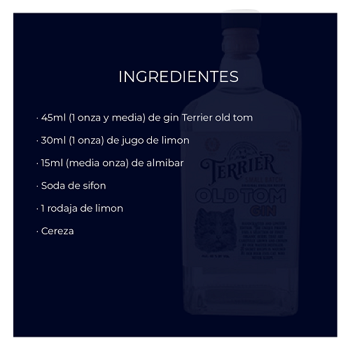

PREPARACIÓN
En un vaso de trago largo colmado de hielo agregamos el gin, el jugo de limón, el almíbar e integramos bien los ingredientes con una cuchara. Agregamos la soda hasta completar el vaso y volvemos a integrar. Por último decoramos con una rodaja de limón y una cereza.